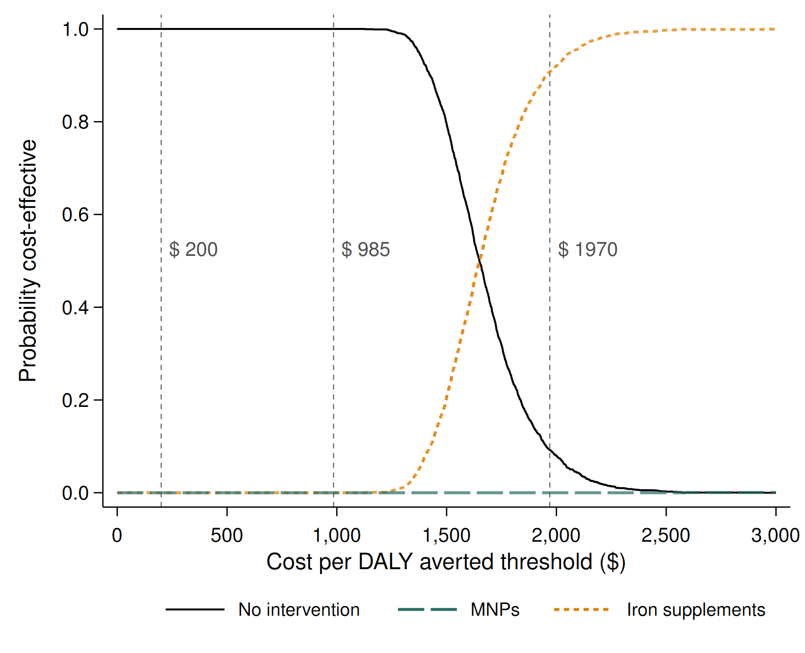
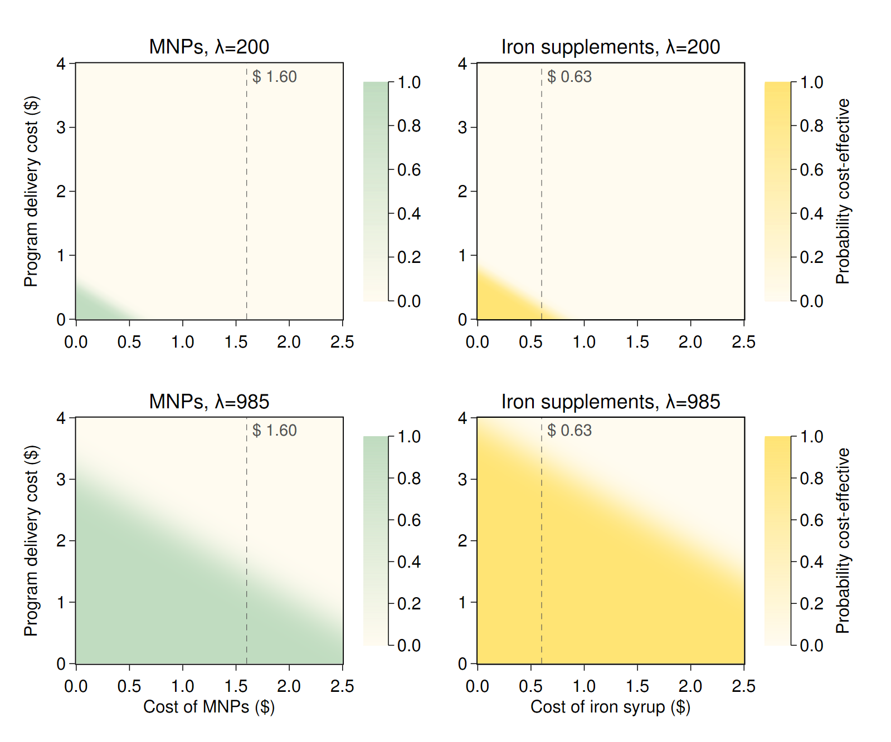

![]()
Resources
Abstract
Background: Universal provision of iron supplements or iron-containing multiple micronutrient powders (MNPs) is widely used to prevent anemia in young children in low- and middle-income countries. The BRISC (Benefits and Risks of Iron Interventions in Children) trial compared iron supplements and MNPs with placebo in children <2 y old in rural Bangladesh.
Objectives: We aimed to assess the cost-effectiveness of iron supplements or iron-containing MNPs among young children in rural Bangladesh.
Methods: We did a cost-effectiveness analysis of MNPs and iron supplements using the BRISC trial outcomes and resource use data, and programmatic data from the literature. Health care costs were assessed from a health system perspective. We calculated incremental cost-effectiveness ratios (ICERs) in terms of US$ per disability-adjusted life-year (DALY) averted. To explore uncertainty, we constructed cost-effectiveness acceptability curves using bootstrapped data over a range of cost-effectiveness thresholds. One- and 2-way sensitivity analyses tested the impact of varying key parameter values on our results.
Results: Provision of MNPs was estimated to avert 0.0031 (95% CI: 0.0022, 0.0041) DALYs/child, whereas iron supplements averted 0.0039 (95% CI: 0.0030, 0.0048) DALYs/child, over 1 y compared with no intervention. Incremental mean costs were $0.75 (95% CI: 0.73, 0.77) for MNPs compared with no intervention and $0.64 ($0.62, $0.67) for iron supplements compared with no intervention. Iron supplementation dominated MNPs because it was cheaper and averted more DALYs. Iron supplementation had an ICER of $1645 ($1333, $2153) per DALY averted compared with no intervention, and had a 0% probability of being the optimal strategy at cost-effectiveness thresholds of $200 (reflecting health opportunity costs in Bangladesh) and $985 [half of gross domestic product (GDP) per capita] per DALY averted. Scenario and sensitivity analyses supported the base case findings.
Conclusions: These findings do not support universal iron supplementation or micronutrient powders as a cost-effective intervention for young children in rural Bangladesh. This trial was registered at anzctr.org.au as ACTRN1261700066038 and trialsearch.who.int as U1111-1196-1125.
Figures

